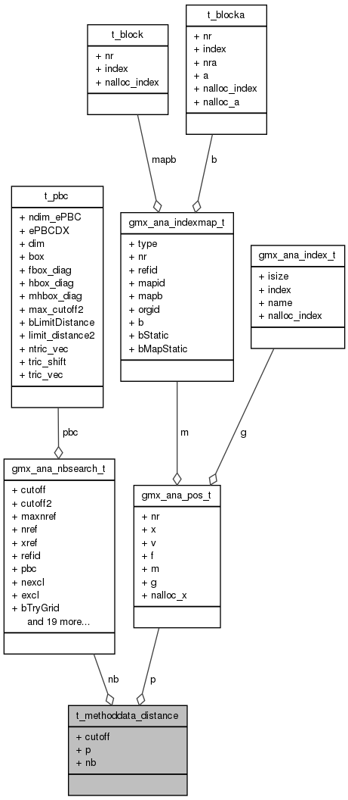

My Project
Main Page
Related Pages
Classes
Files
Examples
Class List
Class Index
Class Members
Public Attributes
t_methoddata_distance Struct Reference
Collaboration diagram for t_methoddata_distance:

[
legend
]
List of all members.
Public Attributes
real
cutoff
gmx_ana_pos_t
p
gmx_ana_nbsearch_t
*
nb
Member Data Documentation
real
t_methoddata_distance::cutoff
Cutoff distance.
gmx_ana_nbsearch_t
*
t_methoddata_distance::nb
Neighborhood search data.
gmx_ana_pos_t
t_methoddata_distance::p
Positions of the reference points.
The documentation for this struct was generated from the following file:
src/gmxlib/selection/
sm_distance.c
All
Classes
Files
Functions
Variables
Typedefs
Enumerations
Enumerator
Defines
Generated on Sat Dec 20 2014 17:22:46 for My Project by
1.7.6.1
 1.7.6.1
1.7.6.1